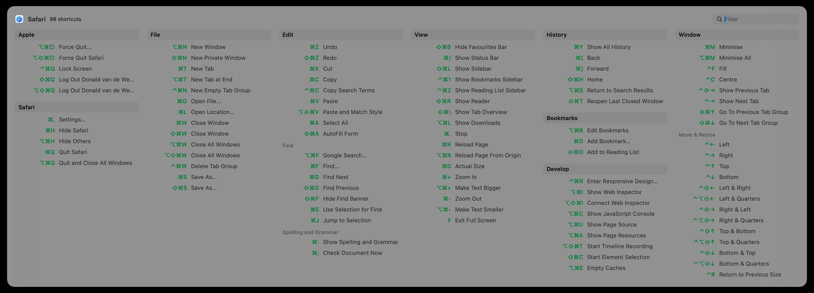

What it does
Instead of hunting through menus to find shortcuts, KeyMinder pops up a clean overview of every keyboard shortcut available in the frontmost app — grouped by menu, triggered by a user-defined hotkey or double-tap on the command, option or control key.
Click any shortcut in the popup to run it immediately. KeyMinder reads menu structures directly via the macOS Accessibility API, so shortcuts are always accurate and up to date for whatever app you're using.
You can search for a keyboard shortcut by starting to type its name and then tab there to execute the command directly. There is even an option to show menu items without keyboard shortcuts - these show only when at least two letters of the command are matched.

Click to enlarge
Requirements
Install
- Download and unzip
KeyMinder_0.1.57.zip - Move
KeyMinder.appto/Applications - Open KeyMinder — macOS will ask for Accessibility permission
- Grant permission in System Settings → Privacy & Security → Accessibility
Why not on the App Store?
KeyMinder uses the Accessibility API to read other apps' menus. This is fundamentally incompatible with the App Store's mandatory App Sandbox — no entitlement exists to re-open this capability inside the sandbox.
The same constraint applies to similar tools such as KeyCue and Shortcat. KeyMinder is distributed as a notarized Developer ID build and is fully open source.
What's new
- Internal stability improvements and expanded test coverage
- About panel simplified — no longer shows the internal git commit hash; now shows version, author, and homepage link
- Filter results are now pre-computed once per query change — smoother scrolling and faster Tab navigation in large shortcut lists
- Onboarding screen text updated to clarify that the popup refreshes automatically after granting Accessibility access — no relaunch needed
- New setting to enable debug logging — off by default; toggle under Developer in Settings
- Double-tap trigger completely rewritten — now works reliably after Command-Tab, app switches, and sleep/wake
- Trigger is re-armed automatically when Accessibility permission is granted, so no relaunch is needed after the first-run setup
- Trigger is re-armed automatically after the Mac wakes from sleep
- About panel in the right-click context menu — shows version, author, and a link to the homepage
- Double-tap detection is more reliable — trigger window widened to 500 ms
- Stability improvements: tighter Accessibility error handling and better log privacy
- New setting to show all menu entries in the popup, not just those with keyboard shortcuts
- When "show all entries" is on, the full list appears after typing 2 characters in the filter
- Section headers in "show all" mode can be collapsed to hide their contents
- When filtering, sections with no matches collapse automatically to keep the list compact
- Tab moves focus through visible shortcuts; Return activates the focused one
- Clicking a shortcut in the popup now runs it in the target app — KeyMinder works as a launcher, not just a reference
- After granting Accessibility permission, the popup refreshes automatically — no close-and-reopen needed
- App now has a proper icon
- Full VoiceOver / screen reader support throughout the shortcuts panel
- Settings window adapts to content height — no more clipping at larger text sizes
- Fixed a rare crash when connecting or disconnecting displays
- Stability improvements for rapid popup toggling
- Initial release
- Double-tap trigger — show KeyMinder by quickly pressing a modifier key twice
- Menu scraping runs in the background — no UI freeze while shortcuts load
- Type-to-filter — start typing while the popup is open to highlight matching shortcuts
- Smooth fade-in / fade-out animation with subtle scale when the popup opens
- Popup shown automatically on first launch for discoverability